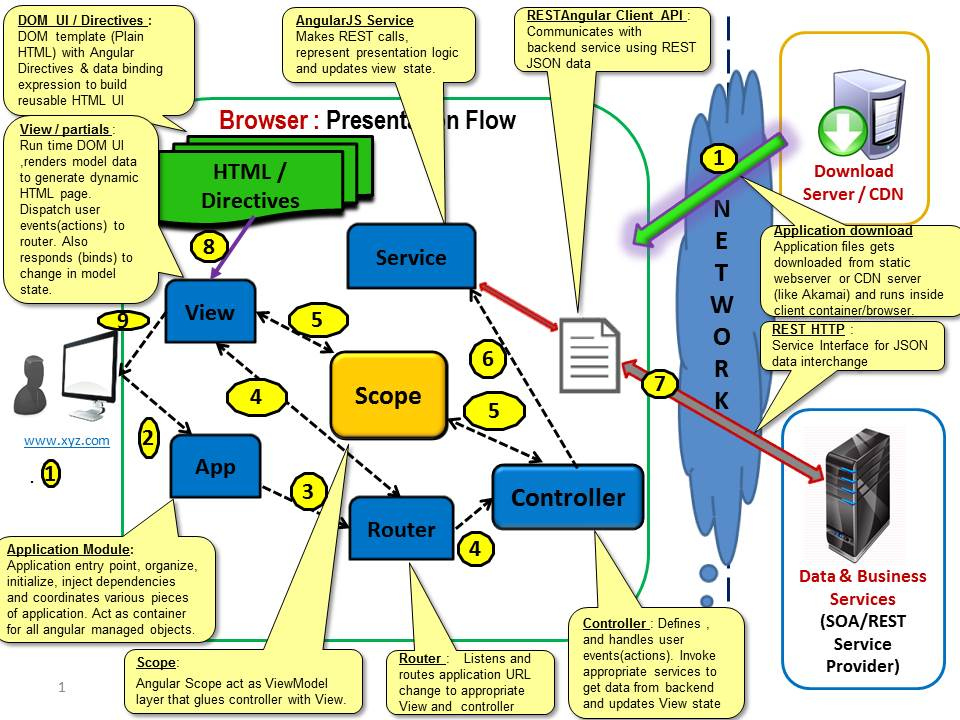

- File: ReadMe.html
- Author: Advanced Javascript Solutions COE
- Reviewer:Advanced Javascript Solutions COE
- Copyrights: Cognizant 2014
Project Description
AngularJS Seed project is an application skeleton that can be used as a starting point for more feature-rich enterprise/commercial single page web application.Project is structured by adopting module pattern using RequireJS in which similar functionalities are organized into the same directory. This approach separates controllers, services and partials into their own modules.Project contains bunch of angularJS libraries,third party libraries,HTML,CSS and re-usable assets to quickly jump start your angular web application development. AngularJS seed project talks to backend REST service hosted in www.mangolab.com.
Technology Stack
UI widgets and Style : HTML4 , HTML5, Twitter Bootstrap 3.1.0 , CSS2,CSS3 and JavaScript
UI Template : Static HTML DOM ,CSS and AngularJS Directives
AMD : RequireJS 2.1.10
RWD : Twitter Bootstrap 3.1.0 and Custom Media queries
Client Validation : AngularJS built-in directives
Javascript MVC framework : AngularJS 1.2
Javascript Patterns : Modularity ,DI,Facade and Singleton
Event Handling,DOM manipulations,Ajax and Service Interface : AngularJS Controller, Directives jQuery v1.11.0 & Rectangular
About SPA
From http://en.wikipedia.org/wiki/Single-page_application - In an
SPA, either all necessary code - HTML, JavaScript, and CSS are retrieved with a single page load, or the appropriate resources are
dynamically loaded and added to the page as necessary, usually in
response to user actions. The page does not reload at any point in the
process, nor does control transfer to another page, although modern web
technologies (such as those included in HTML5) can provide the
perception and navigability of separate logical pages in the
application. Interaction with the single page application often involves
dynamic communication with the web server behind the scenes.
In this implementation, we have a SPA consuming RESTful services using
JSON as data exchange format.
WHY SPA
- Less HTTP calls to Server.
- Fast and responsive non refreshing page. Can redraw any part of the
UI without requiring a server roundtrip to retrieve HTML.
- Thick client -Thin server architecture, less load on the server. Enables superior performance even at low network bandwidth.
- Client invokes backend service only for non-HTML JSON data, thereby minimizes the size of the response data.
- Easy to enable offline browsing capabilities.
- Data requests should generally be faster and the server will do slightly less processing.
- Client and backend services can be developed and exist independently regardless of where they are hosted and built.
- Due to the separation of concerns, testing now becomes easier and more controlled.
- Supports different devices - desktop,tablet,mobile,TV ,Google glass etc.
SPA AngularJS Logical Architecture

AngularJS Architecture
SPA Physical Architecture
Key Layers/Components
- Application : : Application entry point, organize, initialize, inject dependencies and coordinates the various pieces of application.Act as container for all angular managed objects or modules.
- View(Partials) : Run time DOM, renders dynamic page and HTML controls with scope data/state. Dispatch user events(actions) to router. Also responds (binds) to change in model state by updating the UI page.
- Templates : Static HTML page with Angular Directives & data binding expression to build reusable HTML UI.
- Scope/ViewModel : Angular Scope act as ViewModel layer that glues controller with View.Container for presentation data or state, represents interactive data that is required to render on view. View model is a object, that represents/refer data from one or more services. View Model has properties and data specific to View definition and not related to models/collections/services
- Router : Defines applications routes. Listens and routes application URL change to appropriate controller and partials.
- Controller : Defines and handles user events(actions). Invoke appropriate services to get application data from backend service and updates View state via scope.
- Service : Makes REST calls, represent presentation logic and fetch application data from REST service. Enable Facade pattern with the single responsibility of interacting with the external Web service.
View can have only one View Model whereas View Model can have one or many models/collections attached to it.
- RESTAngularJS : It is an AngularJS service that simplifies REST API methods - GET,CREATE DELETE, and UPDATE requests, entity relationships, object graph navigation, with a minimum of client code. Communicates with back-end service using JSON data over REST.
- Directives : Directives in AngularJS are used to make custom HTML elements and simplify DOM manipulation. They can modify the behavior of new and existing DOM elements, by adding custom functionality.AngularJS comes with its own set of built-in directives, as well as the ability to add your own ones.
- Filters : Filters in AngularJS are used to format the data for display, they are most often used along with AngularJS expressions.
- Layouts : Top level UI component to display nested views/partials within a page.
- Config : Container to define all the constants ,configurations and properties related parameters as key/value pair.
- Utils : Defines helper functions and utilities for implementing common behavior that can be reused across application modules.
- Bootstrap : : kick starts angular application module. All initializing or start up functions that needs to be executed prior to application startup have to be defined here.
- Require.js : AMD (Asynchronous Module Definition) script loader that asynchronously loads your JavaScript to improve page load performance, organize JavaScript into self contained modules. Each JavaScript file represents a module. Also does dependency management by injecting dependent modules into current module.
Key Design Decisions
- Favor loose coupling and tight cohesion.
- Favor good separation of concerns.
- Favor modularization and reusability.
- Favor SOLID principles.
- Favour flexibiltiy to pick and choose stacks.
- Favour Portability across all devices and platforms.
- Favor responsive web design.
- Favour Compatability with all major desktop browsers and mobile browsers.
- Favor clean code and website best practices.
Best Practices
- Async and parallel loading of application files - Javascript,CSS and HTML files
- JavaScript Syntax Validation and Code Quality Report
- CSS Syntax Validations and Code Quality Report
- Minifies CSS, JavaScript and HTML resources
- Image Optimizer
- Cache Buster to invalidate cached CSS and JavaScript files
- Generates JavaScript API Documentation
- Added normalize.css to render HTML/HMTL5 components consistently across different browsers.
- Merge and compress all the JavaScript files and CSS files into a
single minimized file. Takes less time to download ,enable minimal
connections to server and thereby improves overall performance and user
experience
Project Directory Layout
Project Root
|
+-------dist/
|
+-------build/
|
+-------test/
|
+-------vendor/
|
+-------readme/
|
+-------src/
|
+---------index.html
|
+---------favicon.ico
|
+---------styles/
|
+---------images/
|
+---------partials/
|
+---------js/
|
+ ---directives/
|
+ ---filters/
|
+ ---config/
|
+ ---utils/
|
+ --- << App specific modules >>
| |
| + ---controllers/
| |
| + ---services/
|
+ ---app.js
|
+ ---bootstrap.js
|
+ ---mainConfig.js
|
+ ---router.js
Usage
We have preconfigured the project with node web server. Install node.js, unzip the project and go to the project root folder in windows command prompt and run the node command : node web-server.js
Launch the app in your web browser by navigating to : http://localhost:8000/src/index.html